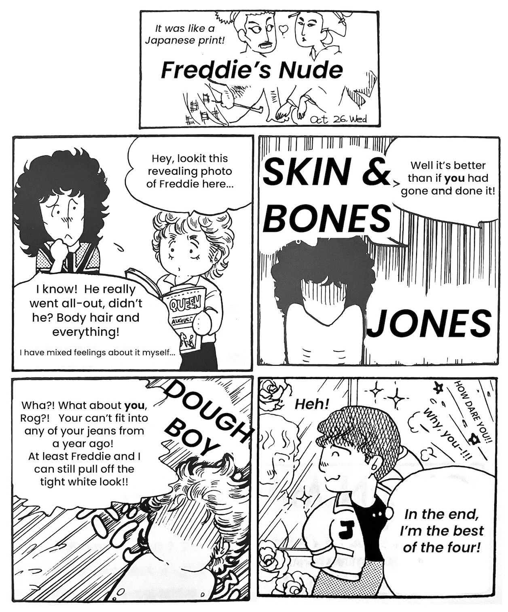

Vol. 28 — February 1984
Vol, 28 sees yet another slight refresh of the magazine, with the first real new info the fanclub has seen in about a year. The Works was scheduled to be released in March of 1984 and there was a lot of excitement surrounding this, as could be expected in the wake of the mixed reviewed Hot Space had received and the subsequent unofficial mini-hiatus the band took throughout 1983. There are also blurbs about Radio Ga Ga, the latest new single.Another change in 1984 would be that Queen moved from Warner Pioneer to Toshiba EMI. There is an introduction from the man in charge of them at EMI, Shunichiro Mori, who mentions how difficult it will be to follow in the footsteps of Tenpei Matsubayashi, who had been working closely with Queen since they first came to Japan in the mid-70s.
There is a short report on the screening of the Seibu Stadium '82 footage. It seems there was quite a low turn out to these screenings, but the people who did show up came away with the experience of being the only Queen fans to ever have seen the entirety of that footage (well, almost). Another video concert is planned, but the only things listed to be screened definitively are Queen music videos from Greatest Flix.
The penpal and want ad pages have perked up again after being quite sparse for a time. A fan is looking for the obscure bootleg Bicycle Race Tour '79 that was mentioned in vol. 23.
December 1983 Video Concert Report
